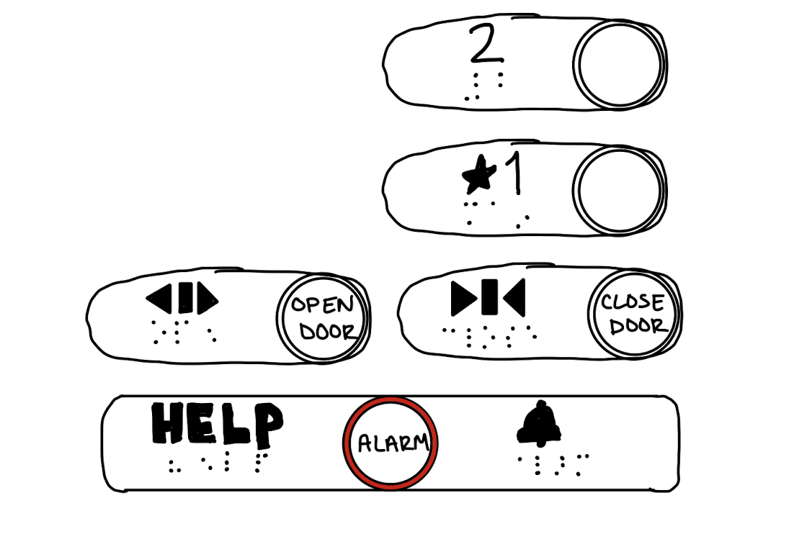
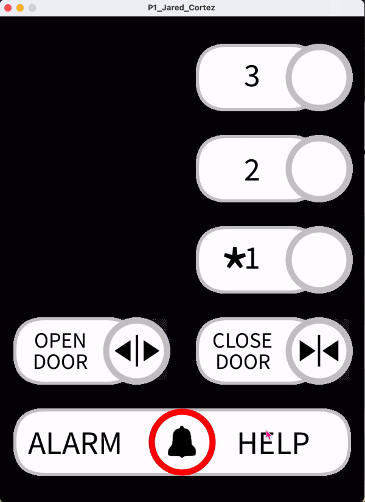

HCI Project 1 Report
GitHub project repository
Sketch and GIF demo
To get a C:
- The elevator in the Petroleum Engineering building

- Gif image of interface in use

Issues with the current design:
- Maintenance buttons clutter up normal use case
- Reasoning: Having more buttons for humans to process makes normal use case take longer
- Emergency call button gives feedback from a different button
- Reasoning: Interface should give feedback from the same button
- Excess of emergency buttons
- Reasoning: Having two buttons for separate emergencies creates more stress in an already stressful
situation
- Cannot unselect a floor
- Reasoning: Wastes time going to wrongly selected floor
To get a B:
Common uses:
- Person walks in, presses 1 or 2
- Person presses "Close Door" if impatient, or presses "Open Door" if they see a person trying to catch the
elevator
Rarer uses:
- Elevator is stuck, person presses alarm or calls for help
- Maintenance locks floors
Common sequence of actions:
- Person presses desired floor button
- Person presses "Close Door" button
How the interface supports the user to figure it out:
- Clear floor labels connected to physical button
- Ground/main floor signified with star
- Clear, simple symbols to signify other buttons
- Close/open door symbols, alarm symbol, phone symbol
- Helpful English words to describe button if symbol does not suffice
- "CLOSE DOOR", "OPEN DOOR", "ALARM", and "HELP" written on physical buttons,
- Emergency buttons have different button outlines
- Call for help button has yellow outline, signifies moderate concern
- Alarm button has red outline, signifies extreme concern
How the interface provides feedback:
- Button lights up blue when a button is selected until selected action is completed
Common mistakes that can be made:
- Pressing the wrong floor
- Pressing the wrong emergency button
Suggested improvements:

- Switching side of floor buttons with floor lockout buttons to line up with alarm button
- This would make it easier to close door after selecting floor as you wouldn't have to cross over
interface
- Having only one emergency button that sounds alarm and calls for help
- This would clear up any potential confusion and save time in a state of emergency
To get an A:
- Implemented sketch using Processing
Processing zip
- Implemented interactive features
- Pressable buttons
- Floor buttons and alarm button can be selected and unselected if necessary
- Provides user feedback
- Floor buttons light up blue when selected
- Alarm button flashes red when pressed
- Close and Open Door buttons turn off after a couple of seconds to allow time for a physical door to
close
- GIF demonstration
